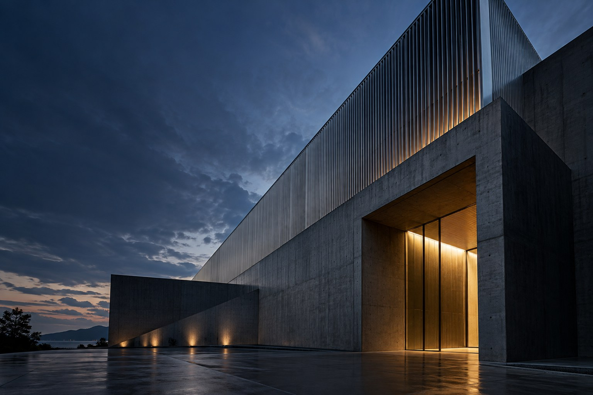

現場で使える設計に、こだわる。
動線・安全性・保守性を整理し、治具や設備の構想、仕様書、導入計画を作成。つくる前のすり合わせを大切にします。
設備設計を相談する ↗架空の事業者・採用情報によるサイトDEMO。実績・金額・所在地はすべてサンプルです。受付・契約は行いません。

ORIGINAL AI CONCEPT IMAGE / 架空の施設製造業の設備設計・生産改善・技術継承を支援する、架空の技術パートナー。課題の整理から実装後の引き継ぎまで、一つの窓口で伴走します。
動線・安全性・保守性を整理し、治具や設備の構想、仕様書、導入計画を作成。つくる前のすり合わせを大切にします。
設備設計を相談する ↗現状観察と工程の見える化から、手戻りを減らす改善案を提案。現場の声とデータの両方から優先順位をつけます。
生産改善を相談する ↗作業手順・判断のポイント・注意事項を整理し、伝わるマニュアルに。新人教育で使える資料として引き継ぎます。
技術継承を相談する ↗担当者へのヒアリングと現状観察を重ね、実際の制約を設計条件へ落とし込みます。
企画・設計・導入の間にある認識のずれを、共通の仕様書で減らします。
納品後にお客様自身で使えるよう、資料と操作説明を整えます。
以下はサービスの用途を伝える架空の実績です。実在のお客様の成果や効果保証ではありません。
作業の往復を整理する改善案と設備仕様書を納品。サンプル想定：歩行距離20%削減。
熟練者の判断を聞き取り、写真手順書30ページへ整理した想定事例。
治具の構想設計と検証計画を、社内レビュー用の一式にまとめた想定事例。
架空のサービス価格例・税込。内容を確認して個別に範囲を定める想定です。
55,000円 / 1回
オンラインヒアリング90分、課題整理シート1式。設計・現地訪問は含みません。
330,000円〜
構想図、仕様書、概算工程表。製作・施工・実機費用は別途見積もりの想定です。
165,000円〜
ヒアリング、手順書10ページまで。追加取材・ページ増は別途の想定です。
はい、という想定のデモです。現状と困っている工程を整理するところから始める構成にしています。
オンラインを基本とし、現地対応は個別相談の想定です。公開時に実際の対応地域と交通費条件へ差し替えてください。
サンプル価格には記載した成果物のみを含みます。追加の編集・保証・保守は範囲と料金を別途定める想定です。
具体的に決まっていなくても大丈夫。ご相談内容を整理するための入力デモです。
このフォームは送信されません。実在の個人情報・機密情報は入力しないでください。確認ボタンは入力内容をブラウザー内で検証するだけです。